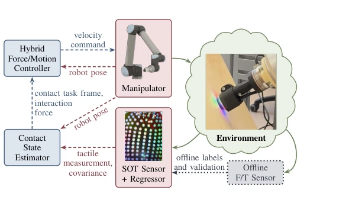
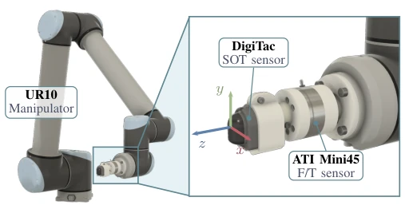
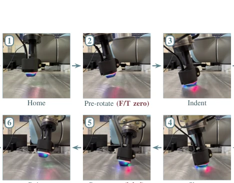
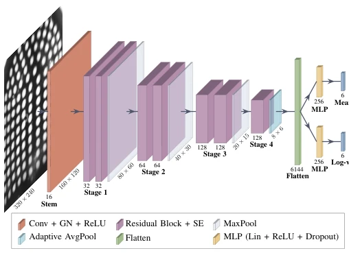
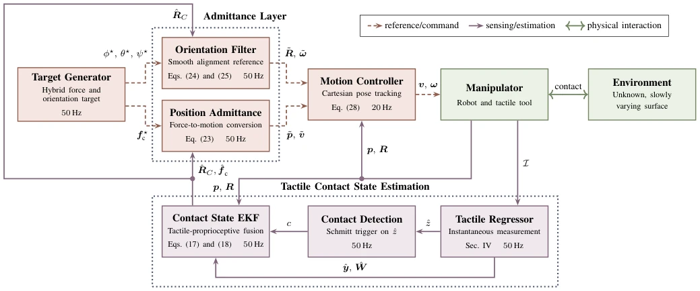
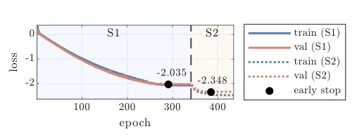
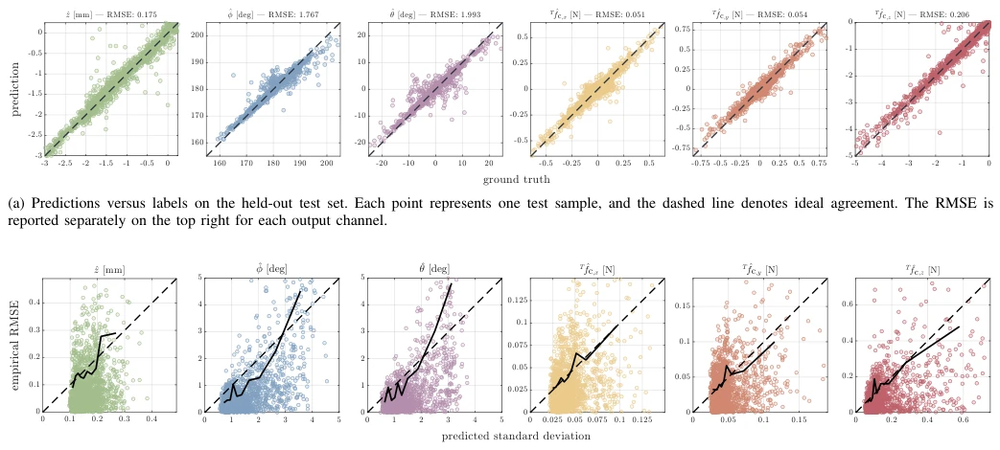
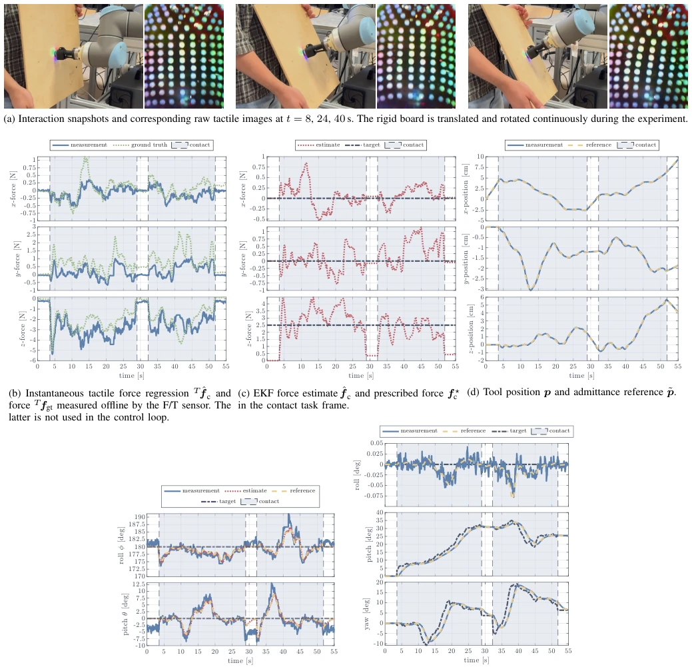
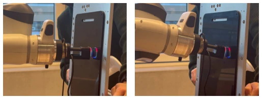

This paper attempts to 'feel' out force and force control frameworks using touch, which sounds appealing, but the premise requires the contact surface to be flat and torque-free. The authors employ DigiTac sensors combined with EKF and self-supervised learning, successfully achieving closed-loop force control without F/T sensors. However, the assumptions of 'local plane' and 'ignoring torque' severely restrict the applicable scope, rendering it ineffective when encountering curved surfaces or complex torque estimation. Although the authors claim it is the 'first integration', it essentially combines tactile regression and state estimation, with the innovation lying in uncertainty propagation and closed-loop verification. For readers pursuing generality, this resembles a sophisticated toy for specific scenarios rather than a universal solution. Nevertheless, achieving 3D force closed-loop without F/T sensors is indeed worth attempting in specific industrial scenarios, provided one does not expect it to handle curved surfaces or complex torques.
Hybrid force/motion control requires knowledge of contact forces and task frames. Traditional solutions rely on wrist-mounted F/T sensors, where signal space is aggregated and deviates from the contact point [1], or rely on model residuals, which are sensitive to modeling errors [8]. Existing tactile servo methods mostly adjust pose rather than explicit force [18, 19], while force regression methods lack a task frame [21]. This paper aims to fill this gap: using only soft optical tactile images, under the local plane assumption, simultaneously reconstructing the contact task frame and 3D force to achieve closed-loop control without environmental models or F/T feedback. Existing methods often assume known environmental models or rely on external force perception, which increases hardware costs or reduces robustness in actual deployment. The authors note that directly recovering contact geometry and force from tactile images can provide more localized interaction information, compensating for the deficiencies of traditional force control.
The overall process is divided into data collection, tactile regression, state estimation, and control. First, controlled contact is applied via a robotic arm, utilizing offline F/T sensors to generate labels (self-labeling), covering indentation depth, tilt angle, and 3D force. Second, a ResNet-style regressor is designed, taking a single tactile image as input and outputting 6-dimensional measurements along with sample-level uncertainty (log-variance), employing a two-stage training process (homoscedastic pre-training + heteroscedastic fine-tuning) to stabilize convergence. Next, an Extended Kalman Filter (EKF) fuses tactile measurements with robot proprioception to update contact plane geometry and interaction forces online, utilizing a Schmitt trigger for contact detection. Finally, an admittance-based hybrid force/motion controller utilizes the estimated task frame to map force targets to motion references, achieving three-axis force adjustment and two-axis tilt alignment. The regressor comprises a residual convolutional backbone and two MLP heads, predicting the mean and log-variance respectively. The EKF state includes plane offset, normal parameters, and contact force. The controller converts force errors into velocity commands through an admittance layer, combined with an attitude filter to ensure sensor alignment.

Fig. 1. Overview of the proposed system. The control loop uses robot proprioception and soft optical tactile images to continuously estimate the contact task frame and the interaction force. The tactile regressor provides an instantaneous tactile measurement and its covariance, which are fused with the robot pose in the contact state estimator. The auxiliary F/T sensor is physically present during data acquisition and validation, but its signal is not part of the control loop.

Fig. 2. Data acquisition setup with tool reference frame. The auxiliary F/T sensor mounted at the wrist is used offline for labeling only and is not part of the control loop.

Fig. 3. The six phases of one data acquisition cycle, described in Sec. III-C. Red tags mark the phases in which the out-of-contact F/T measurement and the labeled sample are recorded.

Fig. 4. Architecture of the proposed ResNet-style convolutional regressor. A residual convolutional backbone with squeeze-and-excitation (SE) blocks feeds two parallel MLP heads, which output the mean and the log-variance of the six-dimensional tactile measurement.

Fig. 5. Tactile-driven hybrid force/motion control architecture. The tactile regressor maps each image I to the instantaneous measurement ˆy and covariance ˆ W . A Schmitt trigger applied to ˆz provides the contact flag c that enables the EKF measurement update. The EKF combines valid tactile measurements with robot proprioceptive pose data (p, R) of the tool to continuously update the estimates of contact task frame ˆRC and interaction force ˆf c. The robot pose is also supplied to the motion controller. The state ξ of the admittance model in Eq. (23) is inside the position admittance block. The estimated contact variables close the loops of force regulation and surface alignment.
Verified on a platform equipped with a UR10 robotic arm, DigiTac sensor, and ATI F/T sensor (used only for offline labels). 10,000 samples were collected across three batches, covering various indentation depths and tilt ranges. The training/validation/test set ratio is 70/15/15. Results indicate the regressor accurately predicts 6-dimensional tactile variables, with reasonable uncertainty estimation. In closed-loop experiments, a human operator moved a rigid plate; the system successfully adjusted the normal force to a non-zero reference and tangential force to zero relying solely on tactile feedback, while adaptively aligning the sensor orientation. Figure 8 displays the tracking performance of force and pose, while Figure 9 validates the feasibility of cross-robot transfer, demonstrating the method's effectiveness in specific planar contact scenarios.

Fig. 6. Training and validation losses of the tactile measurement regressor. Stage 1 performs homoscedastic pretraining, and Stage 2 performs het- eroscedastic fine-tuning from the Stage 1 early-stopping checkpoint.

Fig. 7. Performance of the tactile measurement regressor for the six observable output variables retained by the contact model.

Fig. 8. Experiment of closed-loop tactile force regulation and surface alignment against a rigid board moved continuously by a human operator. Shaded intervals in the plots over time denote the contact phases detected from the regressed indentation depth.

Fig. 9. Two snapshots from trials performed on a different laboratory setup than that of Tab. II. The regressor of Sec. IV was deployed without any retraining on a different manipulator contacting a panel of plastic material.